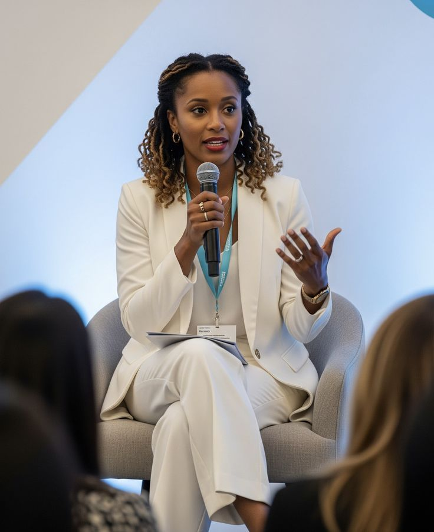
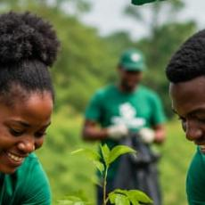
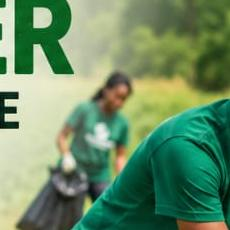

Started by neighbours, not an office
GreenSphere Impact Foundation began when a small group of residents in Takoradi grew tired of watching plastic waste pile up along the beach after every market day. What started as a Saturday clean-up crew has grown into a registered NGO running recycling hubs, school programmes and skills training across the Sekondi-Takoradi Metropolis.
Today, we partner with local government, schools and businesses to make waste separation part of everyday life in the Twin City.

Vision
A Sekondi-Takoradi where no waste goes to waste — a clean, healthy Twin City powered by community action.
Mission
To collect, sort and recycle household and market waste while creating jobs and environmental awareness for local people.
Why We Exist
Poor waste disposal pollutes our beaches, drains and farmland. GreenSphere exists to turn that waste into income, education and a cleaner environment.
Core Values
Community First
Every program is designed with, not for, the people it serves.
Transparency
Open reporting on how donations and materials are used.
Sustainability
Solutions that keep working long after the project ends.
Dignity in Work
Fair pay and safe conditions for every waste worker we support.
Leadership

Ama Mensah
Executive Director
Efua Amissah
School Programmes Coordinator

Kwesi Owusu
Programs Manager

Abena Quansah
Finance & Operations